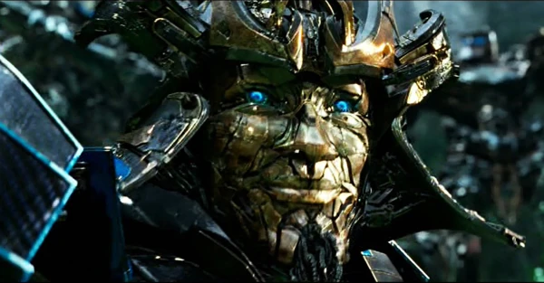

Drift là một chiến sĩ lâu đời và một kiếm sĩ cổ xưa dày kinh nghiệm. Mặc dù anh ấy không cố gắng che giấu quá khứ của mình với tư cách là một Decepticon , nhưng anh ấy thà để thanh kiếm của mình lên tiếng. Sức mạnh của anh ấy nằm ở cả khả năng thành thạo bộ sưu tập kiếm và sự điềm tĩnh của anh ấy trong trận chiến. Bất chấp thời kỳ đen tối đối với Autobots, Drift vẫn bình tĩnh, trang nghiêm và chu đáo, thường dành thời gian để luyện tập kiếm thuật của mình và phun ra haiku về bất cứ điều gì đang xảy ra.

Rời khỏi Decepticons không tự động sửa chữa mọi thứ cho Drift, vì anh ta vẫn có xu hướng hung hăng điên cuồng nếu anh ta giật mình hoặc nói cách khác là hoảng sợ. Điều này khiến anh ta nhanh chóng cố gắng đâm chết bất cứ vấn đề gì. May mắn thay, anh ấy đã tập thiền để bổ sung cho kiếm thuật của mình và hy vọng sẽ kiềm chế được cơn thịnh nộ kéo dài này. Rốt cuộc, anh ta coi bản thân Decepticon của mình đã chết như Megatron .
Hợp tác với các Autobot ồn ào nhất xung quanh có thể không phải là khởi đầu tốt nhất, nhưng may mắn thay, Drift được phục vụ trực tiếp dưới quyền của Optimus Prime , người mà anh ấy gọi là thầy của mình . Biết rằng luôn có hy vọng bất cứ khi nào thủ lĩnh Autobot xuất hiện, Drift sẽ theo Optimus đến tận cùng. Tuy nhiên, anh ta không nghĩ nhiều về những nỗ lực của Bumblebee để trở thành thủ lĩnh Autobot, do tuổi trẻ và thiếu kỷ luật của một chiến binh. Anh ta đôi khi hợp tác với Dinobot Slug .
Drift nằm trong số các Autobot đã ẩn náu trên Trái đất sau khi nhân loại quay lưng lại với các Autobot. Trước sự bất bình của mình, Bumblebee đã nắm quyền chỉ huy trên thực tế của Autobots khi không có Optimus Prime. Drift vui mừng khôn xiết trước sự trở lại của sensei , tuyên bố rằng rốt cuộc vẫn còn hy vọng. Mặc dù Hound nguyền rủa con người là "một lũ chồn đâm sau lưng", Drift vẫn thương hại con người, buồn bã đọc một bài haiku về sự phản bội của con người. Haiku không phù hợp với Hound, và cả hai suýt đánh nhau trước khi sự chú ý của họ chuyển sang sự xuất hiện của Cade Yeagervà gia đình của anh ấy. Tối hôm đó, Drift buồn bã báo cáo rằng họ là năm Autobot cuối cùng, và thông báo cho Optimus về thời gian Bumblebee làm thủ lĩnh trong thời gian anh vắng mặt. Anh ấy không thể cưỡng lại việc bày tỏ sự chán ghét của mình đối với sự lãnh đạo và sự non nớt của Bumblebee, cho rằng Autobot trẻ hơn đã mang lại sự xấu hổ cho cả nhóm. Hai bot nhanh chóng lao vào tấn công với Drift chiếm thế thượng phong trước "người thông minh". Giữ Bumblebee ở mũi kiếm, Drift tuyên bố đã nhìn thấy ngay hành động "mắt cún con" của Bumblebee, chế nhạo anh ta khi một hành động như vậy ở bên dưới anh ta. Tâm trạng nhanh chóng trở nên tồi tệ hơn nữa khi Cade có đoạn phim dự án Drift (ở chế độ xe Bugatti của anh ấy) về cái chết của Ratchet và Leadfoot .

Khi các Autobot tập hợp lại sau khi trốn thoát khỏi con tàu của Lockdown, Optimus thông báo rằng họ sẽ rời Trái đất và bỏ mặc nhân loại cho số phận của mình. Drift không lên tiếng phản đối mệnh lệnh của thủ lĩnh của mình, nhưng đã chặn đường truyền từ Joshua Joyce , thông báo cho nhóm rằng Joyce đang chuyển máy bay không người lái của KSI đến cơ sở của họ ở Trung Quốc. Sau khi Cade cảnh báo Joyce về mối nguy hiểm mà Galvatron gây ra, Drift đảm bảo với Cade rằng con tàu của họ có thể nhanh chóng đưa họ đi khắp thế giới. Rốt cuộc đó là một con tàu vũ trụ. Optimus đã chỉnh sửa mệnh lệnh của mình: trong khi các Autobots sẽ ở lại để lấy Seed và ngăn chặn Galvatron, thì họ sẽ rời Trái đất mãi mãi ngay sau đó.